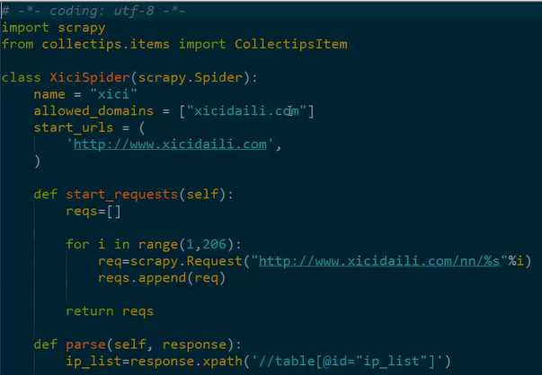

1、创建工程的命令 scrapy startproject collectips（工程名称）
1、编写好的item：
1、Spider是爬虫的核心，也是用户自定义的部分：

1、编写好的pipeline：
2、配置pipeline，在settings中配置pipeline，使其生效：
3、配置列为：ITEM_PIPELINES，配置结束之后执行
1、执行命令：
scrapy crawl xici
2、执行之后数据库中产生的结果：
【本文由麦子学院独家原创，转载请注明出处并保留原文链接】